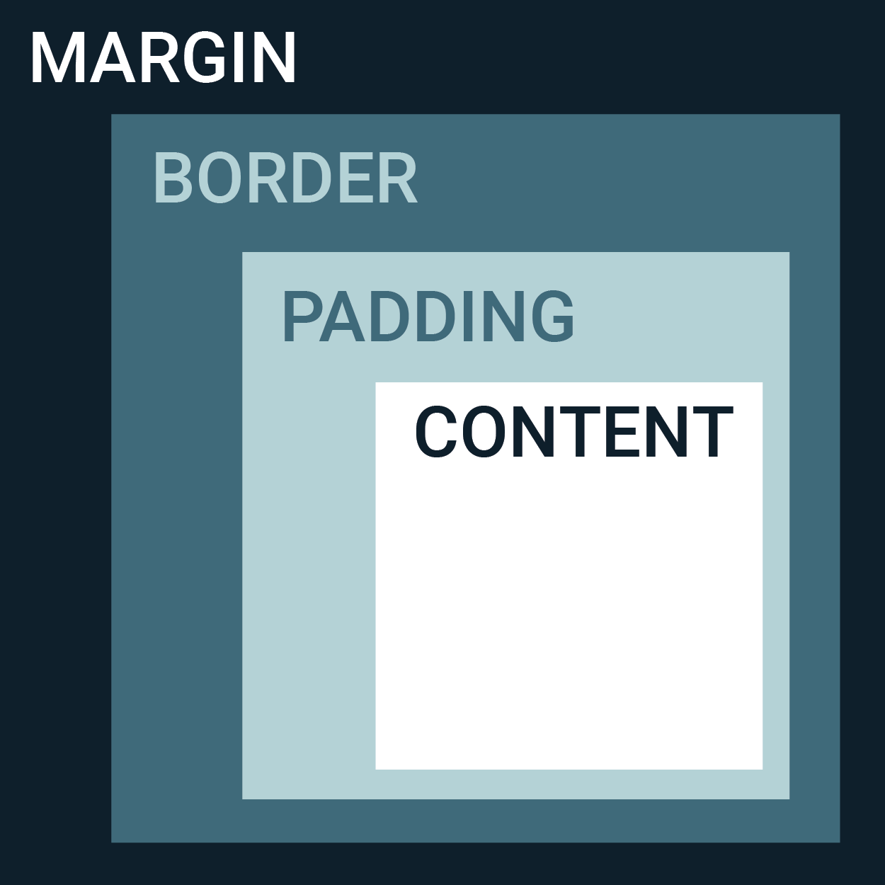

Structure, Phrasing, and Display
A structural (block) element always start on a new line and takes up
the full width of a pagee from left to right while an inline element does not cause
a line break and is only space bound by its opening and closing tag.
The display property in CSS is important for controlling a webpages layout and specifies
how elements are shown. Display inline only takes up the necessary width needed and won't break the
flow of text. Display none hides the element and doesn't
take up any space in the layout.
Box Model
The CSS Box Model is used to understand how different elements are used for the design
and layout of a webpage. At the center is the content where text and images appear. Outside
of the content is padding which essentially clears the area around the content and is determined
by 'padding-top,' 'padding-bottom,' 'padding-right,' and 'padding-left.' The border thickness can be
determined as 'border-width'and 'border-height' and can be explicitly defineed with min-max width and height.
Finally, the margin clears and area outside the border and is transparent similar to the padding. Margin can be determined
by 'margin-top/bottom' and 'margin-right/left.'
